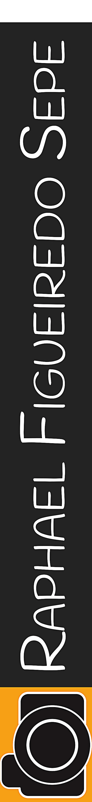
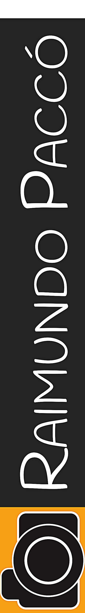

Rio de Janeiro | Posto 11
Recreio
Nossa, nesse dia no Recreio as ondas estavam em boas condições. Essa temporada foi perfeita, eu me lembro como se fosse hoje. Não vejo a hora de encarar de novo essas direitas.

DetalhesAraguari | Amapá /
Pororoca
O momento desta foto foi incrível, bem na hora em que olhei para o lado e vi aquela espuma crescendo e se aproximando, e ao mesmo tempo assustada porque meus amigos que pularam da lancha ficaram para trás. Acabei ficando só e surfando por alguns minutos. Foi incrível.

DetalhesRio de Janeiro | Canto do Recreio /
Canto do Recreio
Quando sentei e vi aquela serie de ondas no meu segundo quintal, eu não podia deixar passar em branco. Não deu em outra, um swell chegou varrendo no Canto do Recreio, e com todo o prazer, surfei o dia inteiro!
DetalhesBrasil | Rio de Janeiro /
Arpoador
Meditar um pouco antes de treinar, e agradecer a beleza desse cenário. Rio de Janeiro sempre um lugar empolgante para treinar e competir os melhores campeonatos de Bodyboard. O Rio continua sempre lindo!
DetalhesPará | Mosqueiro /
Marahú
Aqui é o meu mar de água doce. Uma praia de rio que rola altas ondas, é isso mesmo, altas ondas no mês de Setembro a Dezembro. Fica a uma hora da cidade de Belém e se chama praia do Marahú.
Detalhes{kind=link}
{kind=link}
{kind=link}
{kind=link}
{kind=link}
Sobre Mim
Um pouco sobre mim. Nascida na terra do Açai onde em junho o Carimbo se torna o nosso hino estadual. Minha vida se voltou logo muito cedo em busca das melhores ondas, e sei que ainda tenho muito o que conhecer e explorar nesse planeta que nos chamamos de lar, mas eu so tenho a agradecer as grandes experiências que tive até hoje. Ja enfrentei diversas vezes a pororoca, e confesso que ainda hoje sinto um frio na barriga so de pensar em encarar essa força da natureza cada temporada que passo la. Agradeço muito minha familia por sempre me apoiar nessas tragetorias cheias de superações e realizações, entre elas os meus filhos lindos que significam tudo pra mim, e que sempre servem de inspiração para eu continuar desafiando obstaculos que possam vir aparecer no meu dial dia. O que mais me motiva a continuar desafiando, muitas vezes situações que a principio parecem dificeis de superar, e pra que eu possa alcançar meu objetivo final , e a ideia que no final, aquilo que parecia ser impossivel a princípio, se revelou uma grande oportunidade na minha vida. E eu agradeço muito por ter uma familia que me apoia nas decisões que eu tomo, e agradeco também a meus grandes amigos que fiz durante toda essa grande aventura que surfar proporciona na minha vida.
{kind=link}
{kind=link}
{kind=link}
{kind=link}
{kind=link}
{kind=link}
{kind=link}
{kind=link}
Entrevistas
Entrevistas
27/Março/2015 Pará - Brasil
Kung Bodyboard Xandinha provou mais uma vez que também existe onda perfeita fora da praia. Entre os dias 19 e 25 de março, ela dropou com categoria na Pororoca de São Domingos do Campim, no Pará, Região Norte, acompanhada de mais de outros 50 atletas, não só do Bodyboard. Juntos e sob uma adrenalina indescritível, bateram o récorde brasileiro de maior número de pessoas pegando a mesma onde de Pororoca. “O nascimento de uma pororoca é como o nascimento dos meus filhos. Até hoje não vi algo mais bonito”, conta Xandinha com toda a certeza do mundo. “É o encontro da força do mar e do rio, que te puxam de um lado para o outro. Desde quando você vê a espuma branca vindo no horizonte, o coração já acelera com tudo. A gente tem que estudar muito bem as circunstâncias desse encontro, antes mesmo de entrar na água. É preciso preparo psicológico para encarar. Estar ali, prestes a se arriscar, ouvindo aquele barulho alto, sem saber se o que te espera é uma onda de cinco metros ou um metrinho… é irado!”. O fenômeno proporciona ao bodyboarder sensações incomparáveis.
Dropar na Pororoca é satisfação.
Entrevistas
11/Março/2015 Araguari - Brasil
Magazine: Ride It Festival que será realizado nos dias 19 a 23 de Março em São Domingos do Capim-PA. Com a aproximação dos meses de Março a Junho, é o período mais fértil das ondas. O encontro do rio e mar criará as estrondosas ondas, fazendo a alegria de todos os atletas que praticam esporte na água. “Será uma honra participar desse Recorde. Tudo começou na pororoca de São Domingos do Capim em 2007 quando fui atração do Festival, e desde lá nunca mais parei. A experiência foi incrível e acabei me apaixonando por essa onda surfada no meio da floresta, que são para poucos. Esse Recorde será muito bom para o meu currículo, eu já sou conhecida como a precursora do Bodyboard nas pororocas do Brasil, é claro que estou super empolgada em tirar o Recorde do Festival da França, que não será nada mal. Estou de olho na da Indonésia e China”, completou. A atleta pega a estrada em breve para o Festival e conta com o Co Patrocínio do Salão Studio da Praça / Secretaria de Esporte e Lazer – Seel – PA / Apoio do Biquíni Bela Rosa / Raizes T-Shirts / Craud e ABRASPO.
Xandinha Ereiro no Guinness Book
Entrevistas
00/xxx/2015 São Paulo - Brasil
Craud.net: A atleta Alexandra Ereiro participou neste último final de semana na Praia do Pernambuco, no Guaruja, litoral de São Paulo, da 1º Etapa do Circuito Paulista de Bodyboard 2015. Participei nos dias 16 e 17 de Maio na praia do Pernambuco – Guarujá – SP pela 1º vez da 1º Etapa do Circuito Paulista de Bodyboard 2015. Estou muito feliz, conseguir fazer final e garantir a 3º colocação no Open Feminino, no qual só tinham Profissionais. Este foi o meu melhor resultado depois que me profissionalizei em 2014. Em sua primeira competição oficial este ano Alexandra sobe no pódio e conquista o terceiro lugar da etapa, e soma pontos no ranking da Associação. Participei neste final de semana da 1º Etapa do Circuito Paulista de Bodyboard 2015, e conquistei o 3º lugar da categoria. Gostaria de parabenizar a todos os atletas que competiram, a galera que prestigiou a etapa e aos organizadores do evento, e ao meus apoios, a SEEL, ao Studio Da Praça Cabelo e Estética, a Raízes T-shirts, a Bela Rosa Téxtil, ao site Craud.net e ao Alex Costa - Comentou 'xandinha' para o site.
Xandinha faz pódio no Guarujá
Entrevistas
03/Março/2015 Pará - Brasil
Website: WAVES A bodyboarder Alexandra Ereiro, mais conhecida como Xandinha, foi convidada a participar do Recorde Mundial na Pororoca, festival que será realizado entre os dias 19 e 23 de março, em São Domingos do Capim (PA). Com a aproximação dos meses de março a junho, chega o período mais fértil das ondas. “Será uma honra participar desse Recorde. Tudo começou na pororoca de São Domingos do Capim, em 2007, quando fui atração do Festival, e desde lá nunca mais parei. A experiência foi incrível e acabei me apaixonando por essa onda surfada no meio da floresta, e são para poucos. Já sou conhecida como a precursora do bodyboard nas pororocas do Brasil. Serão vários surfistas nessa onda. Acredito que este ano irei surfar outras pororocas fora do Brasil, estou de olho na Indonésia e China”. A atleta pega a estrada em breve para o Festival e conta com o co-patrocínio do Salão Studio da Praça, Secretaria de Esporte e Lazer – Seel – PA; apoio dos biquínis Bela Rosa, Raizes T-Shirts, Craud e ABRASPO.
Recorde Mundial na Pororoca
Entrevistas
06/Março/2015 Pará - Brasil
Website: Guru Festival que será realizado nos dias 19 a 23 de Março em São Domingos do Capim-PA. Com a aproximação dos meses de Março a Junho, é o período mais fértil das ondas. O encontro do rio e mar criará as estrondosas ondas, fazendo a alegria de todos os atletas que praticam esporte na água. “Será uma honra participar desse Recorde. Tudo começou na pororoca de São Domingos do Capim em 2007 quando fui atração do Festival, e desde lá nunca mais parei. A experiência foi incrível e acabei me apaixonando por essa onda surfada no meio da floresta, que são para poucos. Esse Recorde será muito bom para o meu currículo, eu já sou conhecida como a precursora do Bodyboard nas pororocas do Brasil, é claro que estou super empolgada em tirar o Recorde do Festival da França, que não será nada mal. Estou de olho na da Indonésia e China”, completou. A atleta pega a estrada em breve para o Festival e conta com o Co Patrocínio do Salão Studio da Praça / Secretaria de Esporte e Lazer – Seel – PA / Apoio do Biquíni Bela Rosa / Raizes T-Shirts / Craud e ABRASPO.
Xandinha Ereiro no Guinness Book
Entrevistas
06/Março/2015 Pará - Brasil
Website: Progressivo Cuando uno se imagina el río amazonas, no se logra dimensionarlo, creo que hay que ir para tener una idea real… uno solo piensa Agua, árboles, pirañas y lodo… en la duda y la investigación encontré a Alexandra Ereiro “Bodyboard Xandinha” quien es una bodyboarder profesional Local de Pororocas, es decir es bodyboarder de Río, del Río Amazonas!! cuando supe esto me entró la duda que asumo todos deben de tener en este momento, ¿que tal será? “Bodyboard Xandinha” nos cuenta y nos instruye un poco: La palabra POROROCA proviene del tupí – taladro pororoka, lo que significa rugido que se da por el fenómeno de la mezcla entre las aguas del mar con las aguas de la desembocadura del río. No se puede hablar sin pensar en el poder del río Amazonas. Este fenómeno del Amazonas durante muchos años ha sido un reto para la inteligencia de aquellos que trataron de explicarlo. En la Amazonía, todo está bien: grande y diferente, fascinante y complicado. Pero en ninguna parte del mundo se da este fenómeno de manera tan intensa como en la costa de Amapá y Pará.
Bodyboarding Amazônico
Entrevistas
03/Abril/2013 Fernando de Noronha - Brasil
Website: WAVES Como amo surfar, resolvi conhecer Fernando de Noronha (RN). Passei oito dias nessa ilha linda, de altas ondas tubulares e água azul. Desembarquei em Noronha e peguei uma carona até a casa que dividi com minha amiga, a bodyboard Patrícia Setúbal. No primeiro dia de surf fomos conhecer a praia da Cacimba do Padre. O mar estava clássico, com séries de 2 metros. Na Cacimba do Padre e na Conceição, as ondas quebravam com séries de 2,5 a 3 metros, o único a encarar esse big swell na Cacimba do Padre foi o big rider Aldemir Calunga. No quarto dia o mar baixou e eu aproveitei fazer uns cliques dos surfistas e do visual lindo do lugar. Peguei altas ondas, entubei, manobrei, fiquei impressionada pela imensidão daquela ilha, com paisagens lindas - tentava registrar tudo que podia. Quero agradecer à equipe do Ceará - François, o shaper Massara, Pedro Edson, Edson Alexandre, Loiola, Pará, Patrícia Setúbal e Victor. Agradecer meus co-patrocinadores, o Studio da Praça e a Seel; meus apoios, a Insane, o site Craud e Garota Tropical. É isso aí, galera, em breve mais surf trips pelo Brasil.
Nas ondas de Noronha
Entrevistas
11/Março/2015 Araguari - Brasil
Magazine: Ride It Festival que será realizado nos dias 19 a 23 de Março em São Domingos do Capim-PA. Com a aproximação dos meses de Março a Junho, é o período mais fértil das ondas. O encontro do rio e mar criará as estrondosas ondas, fazendo a alegria de todos os atletas que praticam esporte na água. “Será uma honra participar desse Recorde. Tudo começou na pororoca de São Domingos do Capim em 2007 quando fui atração do Festival, e desde lá nunca mais parei. A experiência foi incrível e acabei me apaixonando por essa onda surfada no meio da floresta, que são para poucos. Esse Recorde será muito bom para o meu currículo, eu já sou conhecida como a precursora do Bodyboard nas pororocas do Brasil, é claro que estou super empolgada em tirar o Recorde do Festival da França, que não será nada mal. Estou de olho na da Indonésia e China”, completou. A atleta pega a estrada em breve para o Festival e conta com o Co Patrocínio do Salão Studio da Praça / Secretaria de Esporte e Lazer – Seel – PA / Apoio do Biquíni Bela Rosa / Raizes T-Shirts / Craud e ABRASPO.
Xandinha Ereiro no Guinness Book
00/xxx/2015 São Paulo - Brasil
Craud.net: A atleta Alexandra Ereiro participou neste último final de semana na Praia do Pernambuco, no Guaruja, litoral de São Paulo, da 1º Etapa do Circuito Paulista de Bodyboard 2015. Em sua primeira competição oficial este ano Alexandra sobe no pódio e conquista o terceiro lugar da etapa, e soma pontos no ranking da Associação. Participei neste final de semana da 1º Etapa do Circuito Paulista de Bodyboard 2015, e conquistei o 3º lugar da categoria. Gostaria de parabenizar a todos os atletas que competiram, a galera que prestigiou a etapa e aos organizadores do evento, e ao meus apoios, a SEEL, ao Studio Da Praça Cabelo e Estética, a Raízes T-shirts, a Bela Rosa Téxtil, ao site Craud.net e ao Alex Costa - Comentou 'Xandinha' para o site.
Xandinha faz pódio no Guarujá
03/Março/2015 Pará - Brasil
Website: WAVES A bodyboarder Alexandra Ereiro, mais conhecida como Xandinha, foi convidada a participar do Recorde Mundial na Pororoca, festival que será realizado entre os dias 19 e 23 de março, em São Domingos do Capim (PA). Com a aproximação dos meses de março a junho, chega o período mais fértil das ondas. “Será uma honra participar desse Recorde. Tudo começou na pororoca de São Domingos do Capim, em 2007, quando fui atração do Festival, e desde lá nunca mais parei. A experiência foi incrível e acabei me apaixonando por essa onda surfada no meio da floresta, e são para poucos. Já sou conhecida como a precursora do bodyboard nas pororocas do Brasil. Serão vários surfistas nessa onda. Acredito que este ano irei surfar outras pororocas fora do Brasil, estou de olho na Indonésia e China”. A atleta pega a estrada em breve para o Festival e conta com o co-patrocínio do Salão Studio da Praça, Secretaria de Esporte e Lazer – Seel – PA; apoio dos biquínis Bela Rosa, Raizes T-Shirts, Craud e ABRASPO.
Recorde Mundial na Pororoca
06/Março/2015 Pará - Brasil
Website: Guru Festival que será realizado nos dias 19 a 23 de Março em São Domingos do Capim-PA. Com a aproximação dos meses de Março a Junho, é o período mais fértil das ondas. O encontro do rio e mar criará as estrondosas ondas, fazendo a alegria de todos os atletas que praticam esporte na água. “Será uma honra participar desse Recorde. Tudo começou na pororoca de São Domingos do Capim em 2007 quando fui atração do Festival, e desde lá nunca mais parei. A experiência foi incrível e acabei me apaixonando por essa onda surfada no meio da floresta, que são para poucos. Esse Recorde será muito bom para o meu currículo, eu já sou conhecida como a precursora do Bodyboard nas pororocas do Brasil, é claro que estou super empolgada em tirar o Recorde do Festival da França, que não será nada mal. Estou de olho na da Indonésia e China”, completou. A atleta pega a estrada em breve para o Festival e conta com o Co Patrocínio do Salão Studio da Praça / Secretaria de Esporte e Lazer – Seel – PA / Apoio do Biquíni Bela Rosa / Raizes T-Shirts / Craud e ABRASPO.
Xandinha Ereiro no Guinness Book
06/Março/2015 Pará - Brasil
Website: Progressivo Cuando uno se imagina el río amazonas, no se logra dimensionarlo, creo que hay que ir para tener una idea real… uno solo piensa Agua, árboles, pirañas y lodo… en la duda y la investigación encontré a Alexandra Ereiro “Bodyboard Xandinha” quien es una bodyboarder profesional Local de Pororocas, es decir es bodyboarder de Río, del Río Amazonas!! cuando supe esto me entró la duda que asumo todos deben de tener en este momento, ¿que tal será? “Bodyboard Xandinha” nos cuenta y nos instruye un poco: La palabra POROROCA proviene del tupí – taladro pororoka, lo que significa rugido que se da por el fenómeno de la mezcla entre las aguas del mar con las aguas de la desembocadura del río. No se puede hablar sin pensar en el poder del río Amazonas. Este fenómeno del Amazonas durante muchos años ha sido un reto para la inteligencia de aquellos que trataron de explicarlo.
Bodyboarding Amazônico
27/Março/2015 Pará - Brasil
Kung Bodyboard Xandinha provou mais uma vez que também existe onda perfeita fora da praia. Entre os dias 19 e 25 de março, ela dropou com categoria na Pororoca de São Domingos do Campim, no Pará, Região Norte, acompanhada de mais de outros 50 atletas, não só do Bodyboard. Juntos e sob uma adrenalina indescritível, bateram o récorde brasileiro de maior número de pessoas pegando a mesma onde de Pororoca. “O nascimento de uma pororoca é como o nascimento dos meus filhos. Até hoje não vi algo mais bonito”, conta Xandinha com toda a certeza do mundo. “É o encontro da força do mar e do rio, que te puxam de um lado para o outro. Desde quando você vê a espuma branca vindo no horizonte, o coração já acelera com tudo. A gente tem que estudar muito bem as circunstâncias desse encontro, antes mesmo de entrar na água. É preciso preparo psicológico para encarar. Estar ali, prestes a se arriscar, ouvindo aquele barulho alto, sem saber se o que te espera é uma onda de cinco metros ou um metrinho… é irado!”.O fenômeno proporciona ao bodyboarder sensações incomparáveis.
Dropar na Pororoca é satisfação
03/Abril/2013 Noronha - Brasil
Website: Waves Como amo surfar, resolvi conhecer Fernando de Noronha (RN). Passei oito dias nessa ilha linda, de altas ondas tubulares e água azul. Desembarquei em Noronha e peguei uma carona até a casa que dividi com minha amiga, a bodyboard Patrícia Setúbal. No primeiro dia de surf fomos conhecer a praia da Cacimba do Padre. O mar estava clássico, com séries de 2 metros. Na Cacimba do Padre e na Conceição, as ondas quebravam com séries de 2,5 a 3 metros, o único a encarar esse big swell na Cacimba do Padre foi o big rider Aldemir Calunga. No quarto dia o mar baixou e eu aproveitei fazer uns cliques dos surfistas e do visual lindo do lugar. Peguei altas ondas, entubei, manobrei, fiquei impressionada pela imensidão daquela ilha, com paisagens lindas - tentava registrar tudo que podia. Quero agradecer à equipe do Ceará - François, o shaper Massara, Pedro Edson, Edson Alexandre, Loiola, Pará, Patrícia Setúbal e Victor. Agradecer meus co-patrocinadores, o Studio da Praça e a Seel; meus apoios, a Insane, o site Craud e Garota Tropical. Em breve mais surf trips pelo Brasil.
Nas ondas de Noronha.
Competições
1º Etapa do Circuito Paulista de Bodyboard 2015
Guaruja, Praia Do Pernambuco Estou Super Feliz, Participei nos dias 16 e 17 de Maio da 1º Etapa do Circuito Paulista de Bodyboard 2015, onde conquistei o 3º lugar.
2º Etapa do Circuito Carioca de Bodyboard 2013.
Circuito Carioca de Bodyboard 2013. Foi um ano muito importante para mim, meu primeiro ano como Profissional. Competindo com as melhores atletas do Brasil.
Circuito Carioca
1º Etapa do Circuito Brasileiro de Bodyboard 2013. Nossa eu perdi por muito pouco, faltando 1 ponto e gravida de 3 meses do meu filho Zyah. Estava muito confiante nessa bateria, lembro muito bem como eu surfei bem mesmo estando gravida.
Pororoca rio Araguari – Amapá
3º Desafio de Bodyboard na Pororoca rio Araguari – Amapá. Evento realizado pela ABRASPO. Inclusive levei as melhores bodyboarders do mundo, entre elas estão: Isabela Sousa / Neymara Carvalho / Soraia Rocha / Mariana Nogueira.
Praia de Itacoatiara Rio de Janeiro.
2º Etapa do Circuito UBBN. No 1º e no 2º dia de campeonato tinha altas ondas, serie de dois metros de onda, e não estava nada fácil. Itacoatiara, é a onda mais pesada do Brasil.
Mundial de Bodyboard - Rio de Janeiro
Circuito Mundial de Bodyboard. Etapa do Circuito Mundial na praia de Copacabana – RJ. Logo na Chegada encontrei varias atletas do mundo todo, e acabei pousando para a foto com alguma delas
Alexandra Ereiro
Bodyboard na Pororoca, Rio Araguari. Durante o evento de Bodyboard e Surf na Pororoca em 2013. Eu tive a sorte de surfar essa onda, ela já estava dando o sinal de extinção.  Rota dos Tubos.
Rota dos Tubos.
1º Campeonato Brasileiro de Bodyboard
Na Pororoca do Rio Arari. Com as melhores Bodyboards do Brasil e do mundo. Evento organizado pela ABRASPO
Circuito Feminino de Bodyboard Kpaloa Musas
1º Lugar na 2º Etapa do Circuito Feminino de Bodyboard Kpaloa Musas Campeã da etapa e do Circuito na categoria iniciante, tirei mais de 40 meninas, todas que competiram comigo na iniciante competiram na categoria amador.